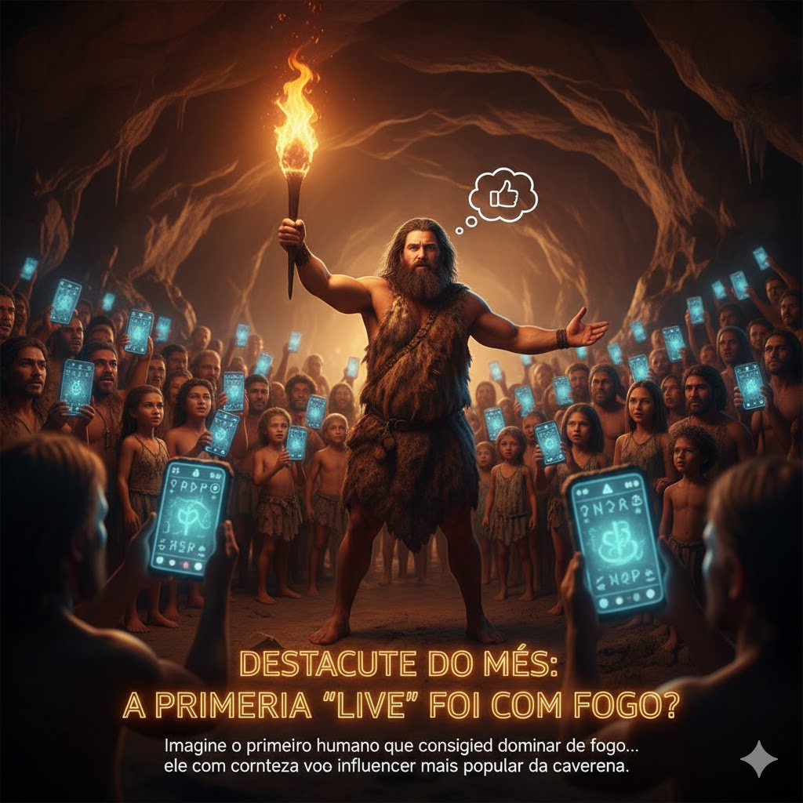

👽 Tecnologias "Alienígenas": Gênio Humano ou Visita Espacial?

Imagine o primeiro humano que conseguiu dominar o fogo... ele com certeza foi o influencer mais popular da caverna.
Hoje, vivemos em um mundo de lives, stories e curtidas, onde a novidade se espalha em segundos. Mas imagine um tempo em que a maior "inovação" era uma faísca. O domínio do fogo, há cerca de 1 milhão de anos, foi a primeira grande "live" da humanidade – um evento que mudou tudo, transmitido em tempo real para uma audiência cativada.
🔥 Por que o Fogo foi a "Live" Mais Importante?A Luz na Escuridão: Pense na escuridão total da noite pré-histórica. O fogo oferecia luz, dissipando o medo do desconhecido. Era como ligar a "lanterna" em um mundo sem luz.
Culinária Revolucionária: A carne cozida era mais fácil de digerir, liberando energia para o desenvolvimento do nosso cérebro. Era a primeira "gastronomia molecular"!
O Chat mais antigo: A fogueira se tornou o ponto de encontro. Ali, os grupos contavam histórias e planejavam a caça. Foi onde a nossa linguagem realmente nasceu.
- "Catching Fire: How Cooking Made Us Human" - Richard Wrangham.
- "Sapiens: Uma Breve História da Humanidade" - Yuval Noah Harari.
- Estudos arqueológicos de Wonderwerk Cave, África do Sul.